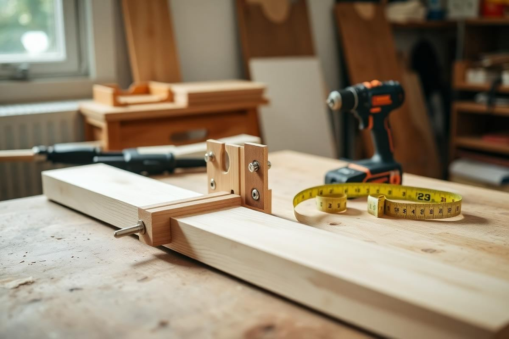
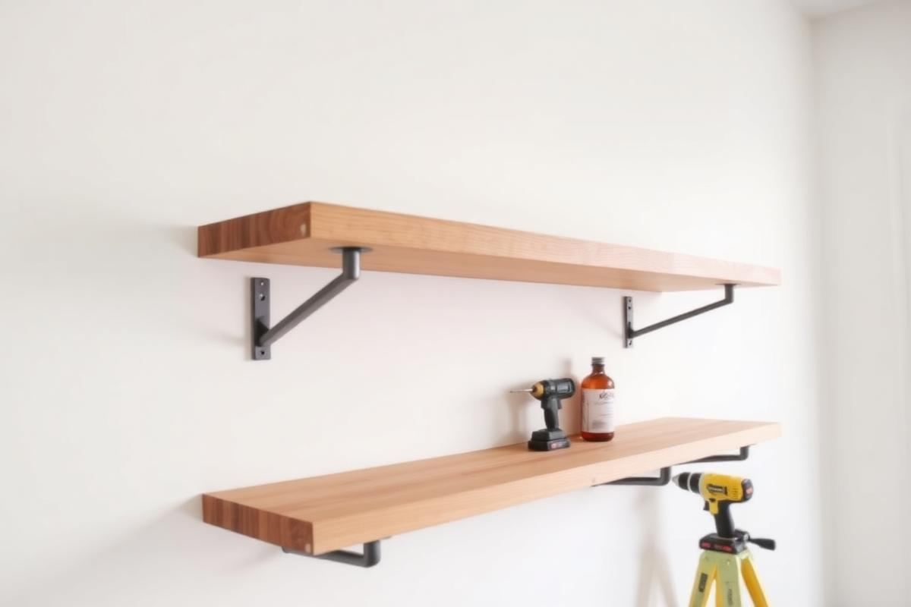

DIY Floating Nightstand: A Weekend Build Anyone Can Do

A floating nightstand is the project I recommend most often to people redoing a small bedroom, because it solves two problems at once. It gives you a surface for a lamp, a glass of water, and a book, and it keeps the floor clear so the room reads larger and is far easier to vacuum. It also lets you set the height precisely rather than accepting whatever the furniture shop decided, which matters more than most people expect when you are reaching for a light in the dark.
I have built this exact design four times, in oak, in birch ply, and twice in pine. The whole thing takes a Saturday of work and a Sunday of drying time, and the material cost sits somewhere between forty and ninety, depending on the timber you choose. No specialist tools are required beyond a drill and a saw, and if your timber merchant will cut to size, you can skip the saw entirely.
Why float a nightstand at all
Legs eat visual space. In a room under 12 square metres, two conventional bedside tables can occupy a surprising amount of the floor you actually see, and because their footprint reaches the skirting board, the eye stops at the furniture rather than travelling to the wall. Lifting the surface off the ground restores that sightline. It also means a bedside rug can run uninterrupted underneath, which makes the whole arrangement feel deliberate.
The practical wins matter too. You can tuck a laundry basket or a pair of slippers underneath, cables can run down the wall behind rather than across the floor, and cleaning takes seconds. In a rental, a well-patched pair of bracket holes is a much smaller commitment than it sounds.
Getting the dimensions right
Height is the number to get right first. Measure from the floor to the top of your mattress, then set the top surface of the nightstand within 5 cm of that line — level with the mattress or very slightly below. Too high and you knock things off reaching sideways; too low and you fumble for the lamp. For a standard bed with a 25 cm mattress on a 30 cm base, that puts the top surface around 55 cm from the floor.
- Depth: 25 to 30 cm. Deep enough for a lamp base and a book, shallow enough not to catch your hip.
- Width: 35 to 45 cm. Anything wider starts to compete with the bed visually.
- Thickness: 3 to 4 cm solid timber, or 18 mm ply with a doubled front edge for a chunkier look.
- Clearance: leave 3 to 5 cm between the edge of the mattress and the edge of the shelf.
If you want a drawer, add 12 cm to the height of the box and build the carcass as a simple open-backed frame with a drawer runner each side. For a first build, I would skip it — the open shelf version looks cleaner and takes a third of the time.
Materials and cutting list
Solid oak looks the best and costs the most. Birch ply is the value choice: it is stable, the exposed edge stripes look intentional, and it takes oil beautifully. Pine is cheapest but dents easily, so if you go that route, plan on painting it rather than leaving it bare.
- 1 top panel, 400 x 280 x 30 mm (your chosen timber).
- 2 concealed floating shelf brackets rated to at least 15 kg each, or a hardwood cleat batten.
- 4 wall fixings suited to your wall type — toggle bolts for plasterboard, frame anchors for masonry.
- 120, 180, and 240 grit abrasive paper.
- Hardwax oil or water-based satin varnish, plus a lint-free cloth.

Choosing the mounting method
There are two honest options. Concealed rod brackets give the true floating look: you drill matching holes into the rear edge of the panel and slide it onto steel rods fixed to the wall. They demand accuracy — the holes must be square and at exactly the same spacing as the rods — but the result is invisible hardware. A hardwood cleat is far more forgiving: you fix a batten to the wall, then screw the panel down onto it from above or glue and pin the panel over a three-sided frame. From standing height nobody sees the difference.
Whichever you choose, the fixing has to go into something solid. In a stud wall, find the studs and fix into them; if the studs do not line up with where you want the shelf, use heavy-duty toggle bolts and keep the load light. In masonry, drill and plug with the correct size anchor for the screw. A nightstand only carries a few kilos, but it will get leaned on at three in the morning, and that is when a weak fixing announces itself.
The build, step by step
- Cut the panel to size, or have the merchant do it. Check the corners are square before you go further.
- Sand the faces and edges with 120, then 180, then 240 grit, easing the sharp arrises with a light pass.
- Mark the wall line with a spirit level, at your measured height, and pencil the bracket positions.
- Drill and fix the brackets or cleat to the wall, checking level again once tightened.
- For rod brackets, mark and drill the rear edge holes using a drill guide or a scrap block clamped square.
- Dry-fit the panel, adjust, then remove it for finishing before the final fix.
Do not skip the dry fit. Every time I have rushed straight to finishing, I have found a bracket a millimetre out and had to sand oil off a rear edge to correct it.
Finishing and sealing
Hardwax oil is the right finish for a bedside surface. Apply a thin coat with a cloth, leave it 10 minutes, then wipe back hard so no wet film remains. Let it cure overnight, sand very lightly with 320 grit, and apply a second coat the same way. Two thin coats beat one thick one every time — a heavy coat stays tacky for days and picks up dust.
If you are painting, prime the timber first, sand between coats, and use an eggshell or satin rather than matt. A bedside surface gets wet glasses and hand cream on it, and matt paint marks permanently.
Styling the finished shelf
Keep it to three things: a light source, something useful, and something soft. A small lamp or a wall-mounted reading light, a stack of one or two books, and a low ceramic dish for rings and hair ties is the formula I use in every bedroom I style. Adding a fourth object almost always tips it from calm into cluttered, and the whole point of the floating shelf was visual quiet.
If you have chosen a wall light rather than a table lamp, run the cable down the wall behind the shelf and clip it to the skirting, or fit a recessed socket behind the headboard. A trailing flex undoes the clean line you just built.
Five mistakes to avoid
- Mounting to plasterboard with plastic plugs. Use toggles or hit a stud, always.
- Setting the height by eye rather than measuring off the mattress top.
- Making the shelf too deep, so you catch your hip getting into bed.
- Finishing before dry-fitting, then having to sand oiled timber to adjust.
- Skipping the second oil coat, which is what makes the surface water resistant.
Build one, live with it for a week, and you will almost certainly build a matching one for the other side of the bed the following weekend. It is that kind of project.
Key takeaways
- Set the top surface level with the mattress top, around 55 cm from the floor.
- Keep the shelf 25 to 30 cm deep and 35 to 45 cm wide so it does not crowd the bed.
- Fix into studs or use heavy-duty toggles — never plastic plugs in plasterboard.
- Dry-fit before finishing, then apply two thin coats of hardwax oil.
- Style with exactly three objects: a light, a book, and a small dish.
Frequently asked questions
How much weight can a DIY floating nightstand hold?
With two concealed brackets rated to 15 kg each and fixings into studs or masonry, 10 to 15 kg is a safe working load — far more than a lamp, books, and a glass of water.
What height should a floating nightstand be?
Set the top surface level with the top of your mattress or up to 5 cm below it, which is usually around 55 cm from the floor for a standard bed.
Can I build a floating nightstand in a rental?
Yes. Two or four bracket holes are simple to fill and repaint when you leave, and the fix is far less invasive than a full shelving system.
What timber is best for a floating nightstand?
Birch ply gives the best balance of cost, stability, and looks. Solid oak is the premium choice, and pine works if you plan to paint it.
Do I need concealed brackets or will a cleat work?
A hardwood cleat works perfectly well and is far more forgiving to install. Concealed rod brackets only matter if you want no visible support from the side.

Sophia Bennett is a certified interior stylist and the senior editor at Styleire. She has spent more than eight years helping homeowners and renters create warm, functional interiors, with hands-on experience across small city apartments and family homes. Her work has been informed by close collaboration with independent designers, craftspeople, and product testers.
View full profile →Related reading

How to Style a Bedside Table (5 Simple Rules)
How to Style a Bedside Table (5 Simple Rules) — a clear, editor-tested guide covering the essentials without the filler.

DIY Shelving Projects You Can Finish in a Day
DIY Shelving Projects You Can Finish in a Day — a clear, editor-tested guide covering the essentials without the filler.

Bedroom Storage Ideas for Rooms With No Closet Space
Storage is what separates a restful bedroom from a stressful one. Here is how to find cubic feet in a room that appears to have none.